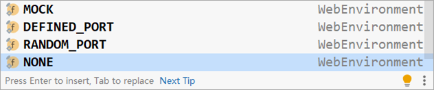
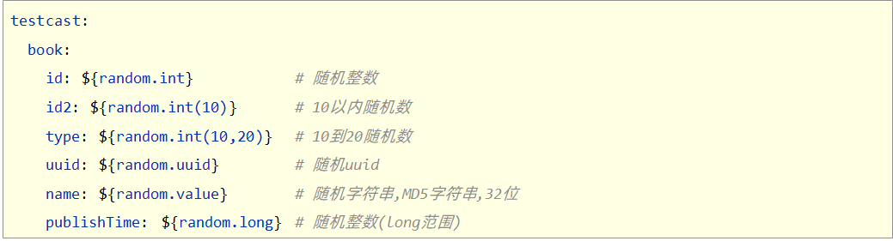

Springboot之实用篇
一、热部署
1、手动启动热部署
步骤①：导入开发者工具对应的坐标
<dependency>
<groupId>org.springframework.boot</groupId>
<artifactId>spring-boot-devtools</artifactId>
<optional>true</optional>
</dependency>步骤②：构建项目，可以使用快捷键激活此功能

对应的快捷键一定要记得
<CTRL>+<F9> 以上过程就实现了springboot工程的热部署。不过这里需要把底层的工作工程给普及一下。
重启与重载
一个springboot项目在运行时实际上是分两个过程进行的，根据加载的东西不同，划分成base类加载器与restart类加载器。
- base类加载器：用来加载jar包中的类，jar包中的类和配置文件由于不会发生变化，因此不管加载多少次，加载的内容不会发生变化
- restart类加载器：用来加载开发者自己开发的类、配置文件、页面等信息，这一类文件受开发者影响
当springboot项目启动时，base类加载器执行，加载jar包中的信息后，restart类加载器执行，加载开发者制作的内容。当执行构建项目后，由于jar中的信息不会变化，因此base类加载器无需再次执行，所以仅仅运行restart类加载即可，也就是将开发者自己制作的内容重新加载就行了，这就完成了一次热部署的过程，也可以说热部署的过程实际上是重新加载restart类加载器中的信息。
总结
- 使用开发者工具可以为当前项目开启热部署功能
- 使用构建项目操作对工程进行热部署
2、自动启动热部署
自动热部署其实就是设计一个开关，打开这个开关后，IDE工具就可以自动热部署。因此这个操作和IDE工具有关，以下以idea为例设置idea中启动热部署
步骤①：设置自动构建项目
打开【File】，选择【settings…】,在面板左侧的菜单中找到【Compile】选项，然后勾选【Build project automatically】，意思是自动构建项目

自动构建项目选项勾选后
步骤②：允许在程序运行时进行自动构建
使用快捷键【Ctrl】+【Alt】+【Shit】+【/】打开维护面板，选择第1项【Registry…】

在选项中搜索comple，然后勾选对应项即可

这样程序在运行的时候就可以进行自动构建了，实现了热部署的效果。
关注：如果你每敲一个字母，服务器就重新构建一次，这未免有点太频繁了，所以idea设置当idea工具失去焦点5秒后进行热部署。其实就是你从idea工具中切换到其他工具时进行热部署，比如改完程序需要到浏览器上去调试，这个时候idea就自动进行热部署操作。
总结
- 自动热部署要开启自动构建项目
- 自动热部署要开启在程序运行时自动构建项目
3、热部署范围配置
通过修改项目中的文件，发现其实并不是所有的文件修改都会激活热部署的，原因在于在开发者工具中有一组配置，当满足了配置中的条件后，才会启动热部署，配置中默认不参与热部署的目录信息如下
- /META-INF/maven
- /META-INF/resources
- /resources
- /static
- /public
- /templates
以上目录中的文件如果发生变化，是不参与热部署的。如果想修改配置，可以通过application.yml文件进行设定哪些文件不参与热部署操作
spring:
devtools:
restart:
# 设置不参与热部署的文件或文件夹
exclude: static/**,public/**,config/application.yml总结
- 通过配置可以修改不参与热部署的文件或目录
4、关闭热部署
线上环境运行时是不可能使用热部署功能的，所以需要强制关闭此功能，通过配置可以关闭此功能。
spring:
devtools:
restart:
enabled: false 如果当心配置文件层级过多导致相符覆盖最终引起配置失效，可以提高配置的层级，在更高层级中配置关闭热部署。例如在启动容器前通过系统属性设置关闭热部署功能。
@SpringBootApplication
public class SSMPApplication {
public static void main(String[] args) {
System.setProperty("spring.devtools.restart.enabled","false");
SpringApplication.run(SSMPApplication.class);
}
} 其实上述担心略微有点多余，因为线上环境的维护是不可能出现修改代码的操作的，这么做唯一的作用是降低资源消耗，毕竟那双盯着你项目是不是产生变化的眼睛只要闭上了，就不具有热部署功能了，这个开关的作用就是禁用对应功能。
总结
- 通过配置可以关闭热部署功能降低线上程序的资源消耗
二、配置高级
1、@ConfigurationProperties
在基础篇学习了@ConfigurationProperties注解，此注解的作用是用来为bean绑定属性的。开发者可以在yml配置文件中以对象的格式添加若干属性
servers:
ip-address: 192.168.0.1
port: 2345
timeout: -1 然后再开发一个用来封装数据的实体类，注意要提供属性对应的setter方法
@Component
@Data
public class ServerConfig {
private String ipAddress;
private int port;
private long timeout;
} 使用@ConfigurationProperties注解就可以将配置中的属性值关联到开发的模型类上
@Component
@Data
@ConfigurationProperties(prefix = "servers")
public class ServerConfig {
private String ipAddress;
private int port;
private long timeout;
} 这样加载对应bean的时候就可以直接加载配置属性值了。
同时使用@ConfigurationProperties注解其实可以为第三方bean加载属性，格式特殊一点而已。
步骤①：使用@Bean注解定义第三方bean
@Bean
public DruidDataSource datasource(){
DruidDataSource ds = new DruidDataSource();
return ds;
}步骤②：在yml中定义要绑定的属性，注意datasource此时全小写
datasource:
driverClassName: com.mysql.jdbc.Driver步骤③：使用@ConfigurationProperties注解为第三方bean进行属性绑定，注意前缀是全小写的datasource
@Bean
@ConfigurationProperties(prefix = "datasource")
public DruidDataSource datasource(){
DruidDataSource ds = new DruidDataSource();
return ds;
} 操作方式完全一样，只不过@ConfigurationProperties注解不仅能添加到类上，还可以添加到方法上，添加到类上是为spring容器管理的当前类的对象绑定属性，添加到方法上是为spring容器管理的当前方法的返回值对象绑定属性，其实本质上都一样。
做到这其实就出现了一个新的问题，目前定义bean不是通过类注解定义就是通过@Bean定义，使用@ConfigurationProperties注解可以为bean进行属性绑定，那在一个业务系统中，哪些bean通过注解@ConfigurationProperties去绑定属性了呢？因为这个注解不仅可以写在类上，还可以写在方法上，所以找起来就比较麻烦了。为了解决这个问题，spring给我们提供了一个全新的注解，专门标注使用@ConfigurationProperties注解绑定属性的bean是哪些。这个注解叫做@EnableConfigurationProperties。具体如何使用呢？
步骤①：在配置类上开启@EnableConfigurationProperties注解，并标注要使用@ConfigurationProperties注解绑定属性的类
@SpringBootApplication
@EnableConfigurationProperties(ServerConfig.class)
public class Springboot13ConfigurationApplication {
}步骤②：在对应的类上直接使用@ConfigurationProperties进行属性绑定
@Data
@ConfigurationProperties(prefix = "servers")
public class ServerConfig {
private String ipAddress;
private int port;
private long timeout;
} 有人感觉这没区别啊？注意观察，现在绑定属性的ServerConfig类并没有声明@Component注解。当使用@EnableConfigurationProperties注解时，spring会默认将其标注的类定义为bean，因此无需再次声明@Component注解了。
最后再说一个小技巧，使用@ConfigurationProperties注解时，会出现一个提示信息

出现这个提示后只需要添加一个坐标此提醒就消失了
<dependency>
<groupId>org.springframework.boot</groupId>
<artifactId>spring-boot-configuration-processor</artifactId>
</dependency>总结
- 使用@ConfigurationProperties可以为使用@Bean声明的第三方bean绑定属性
- 当使用@EnableConfigurationProperties声明进行属性绑定的bean后，无需使用@Component注解再次进行bean声明
2、宽松绑定/松散绑定
在进行属性绑定时，可能会遇到如下情况，为了进行标准命名，开发者会将属性名严格按照驼峰命名法书写，在yml配置文件中将datasource修改为dataSource，如下：
dataSource:
driverClassName: com.mysql.jdbc.Driver 此时程序可以正常运行，然后又将代码中的前缀datasource修改为dataSource，如下：
@Bean
@ConfigurationProperties(prefix = "dataSource")
public DruidDataSource datasource(){
DruidDataSource ds = new DruidDataSource();
return ds;
} 此时就发生了编译错误，而且并不是idea工具导致的，运行后依然会出现问题，配置属性名dataSource是无效的
Configuration property name 'dataSource' is not valid:
Invalid characters: 'S'
Bean: datasource
Reason: Canonical names should be kebab-case ('-' separated), lowercase alpha-numeric characters and must start with a letter
Action:
Modify 'dataSource' so that it conforms to the canonical names requirements. 为什么会出现这种问题，这就要来说一说springboot进行属性绑定时的一个重要知识点了，有关属性名称的宽松绑定，也可以称为宽松绑定。
什么是宽松绑定？实际上是springboot进行编程时人性化设计的一种体现，即配置文件中的命名格式与变量名的命名格式可以进行格式上的最大化兼容。兼容到什么程度呢？几乎主流的命名格式都支持，例如：
在ServerConfig中的ipAddress属性名
@Component
@Data
@ConfigurationProperties(prefix = "servers")
public class ServerConfig {
private String ipAddress;
} 可以与下面的配置属性名规则全兼容
servers:
ipAddress: 192.168.0.2 # 驼峰模式
ip_address: 192.168.0.2 # 下划线模式
ip-address: 192.168.0.2 # 烤肉串模式
IP_ADDRESS: 192.168.0.2 # 常量模式 也可以说，以上4种模式最终都可以匹配到ipAddress这个属性名。为什么这样呢？原因就是在进行匹配时，配置中的名称要去掉中划线和下划线后，忽略大小写的情况下去与java代码中的属性名进行忽略大小写的等值匹配，以上4种命名去掉下划线中划线忽略大小写后都是一个词ipaddress，java代码中的属性名忽略大小写后也是ipaddress，这样就可以进行等值匹配了，这就是为什么这4种格式都能匹配成功的原因。不过springboot官方推荐使用烤肉串模式，也就是中划线模式。
到这里掌握了一个知识点，就是命名的规范问题。再来看开始出现的编程错误信息
Configuration property name 'dataSource' is not valid:
Invalid characters: 'S'
Bean: datasource
Reason: Canonical names should be kebab-case ('-' separated), lowercase alpha-numeric characters and must start with a letter
Action:
Modify 'dataSource' so that it conforms to the canonical names requirements. 其中Reason描述了报错的原因，规范的名称应该是烤肉串(kebab)模式(case)，即使用-分隔，使用小写字母数字作为标准字符，且必须以字母开头。然后再看写的名称dataSource，就不满足上述要求。在书写前缀时，这个词不是随意支持的，必须使用上述标准。
最后说一句，以上规则仅针对springboot中@ConfigurationProperties注解进行属性绑定时有效，对@Value注解进行属性映射无效。
总结
- @ConfigurationProperties绑定属性时支持属性名宽松绑定，这个宽松体现在属性名的命名规则上
- @Value注解不支持松散绑定规则
- 绑定前缀名推荐采用烤肉串命名规则，即使用中划线做分隔符，仅能使用纯小写字母、数字、下划线作为合法字符
3、常用计量单位绑定
在前面的配置中，书写了如下配置值，其中第三项超时时间timeout描述了服务器操作超时时间，当前值是-1表示永不超时。
servers:
ip-address: 192.168.0.1
port: 2345
timeout: -1 但是每个人都这个值的理解会产生不同，比如线上服务器完成一次主从备份，配置超时时间240，这个240如果单位是秒就是超时时间4分钟，如果单位是分钟就是超时时间4小时。面对一次线上服务器的主从备份，设置4分钟，简直是开玩笑，别说拷贝过程，备份之前的压缩过程4分钟也搞不定，这个时候问题就来了，怎么解决这个误会？
除了加强约定之外，springboot充分利用了JDK8中提供的全新的用来表示计量单位的新数据类型，从根本上解决这个问题。以下模型类中添加了两个JDK8中新增的类，分别是Duration和DataSize
@Component
@Data
@ConfigurationProperties(prefix = "servers")
public class ServerConfig {
@DurationUnit(ChronoUnit.HOURS)
private Duration serverTimeOut;
@DataSizeUnit(DataUnit.MEGABYTES)
private DataSize dataSize;
}
Duration：表示时间间隔，可以通过@DurationUnit注解描述时间单位，例如上例中描述的单位为小时（ChronoUnit.HOURS）
DataSize：表示存储空间，可以通过@DataSizeUnit注解描述存储空间单位，例如上例中描述的单位为MB（DataUnit.MEGABYTES）
使用上述两个单位就可以有效避免因沟通不同步或文档不健全导致的信息不对称问题，从根本上解决了问题，避免产生误读。
Druation常用单位如下：

DataSize常用单位如下：

4、校验
目前在进行属性绑定时可以通过松散绑定规则在书写时放飞自我了，但是在书写时由于无法感知模型类中的数据类型，就会出现类型不匹配的问题，比如代码中需要int类型，配置中给了非法的数值，例如写一个“a”，这种数据肯定无法有效的绑定，还会引发错误。
SpringBoot给出了强大的数据校验功能，可以有效的避免此类问题的发生。在JAVAEE的JSR303规范中给出了具体的数据校验标准，开发者可以根据自己的需要选择对应的校验框架，此处使用Hibernate提供的校验框架来作为实现进行数据校验。书写应用格式非常固定，话不多说，直接上步骤
步骤①：开启校验框架
<!--1.导入JSR303规范-->
<dependency>
<groupId>javax.validation</groupId>
<artifactId>validation-api</artifactId>
</dependency>
<!--使用hibernate框架提供的校验器做实现，否则会报错-->
<dependency>
<groupId>org.hibernate.validator</groupId>
<artifactId>hibernate-validator</artifactId>
</dependency>步骤②：在需要开启校验功能的类上使用注解@Validated开启校验功能
@Component
@Data
@ConfigurationProperties(prefix = "servers")
//开启对当前bean的属性注入校验
@Validated
public class ServerConfig {
}步骤③：对具体的字段设置校验规则
@Component
@Data
@ConfigurationProperties(prefix = "servers")
//开启对当前bean的属性注入校验
@Validated
public class ServerConfig {
//设置具体的规则
@Max(value = 8888,message = "最大值不能超过8888")
@Min(value = 202,message = "最小值不能低于202")
private int port;
} 通过设置数据格式校验，就可以有效避免非法数据加载，其实使用起来还是挺轻松的，基本上就是一个格式。
总结
- 开启Bean属性校验功能一共3步：导入JSR303与Hibernate校验框架坐标、使用@Validated注解启用校验功能、使用具体校验规则规范数据校验格式
5、数据类型转换
关于bean的属性注入的问题，报错如下
java.sql.SQLException: Access denied for user 'root'@'localhost' (using password: YES) 其实看到这个报错，这是用户名和密码不匹配，就是密码输入错了，但是问题就在于密码并没有输入错误。给的报错信息无法帮助你有效的分析问题，甚至会给你带到沟里。用户名密码的配置是这样写的：
spring:
datasource:
driver-class-name: com.mysql.cj.jdbc.Driver
url: jdbc:mysql://localhost:3306/ssm_db?serverTimezone=UTC
username: root
password: 0127 密码使用0127，其实问题就出在这里。
在整数相关知识中有这么一句话，支持二进制，八进制，十六进制

问题就处在这里了，0127在开发者眼中是一个字符串“0127”，但是在springboot看来，这就是一个数字，而且是一个八进制的数字。当后台使用String类型接收数据时，如果配置文件中配置了一个整数值，他是先安装整数进行处理，读取后再转换成字符串。巧了，0127撞上了八进制的格式，所以最终以十进制数字87的结果存在了。
这里提两个注意点，第一，字符串标准书写加上引号包裹，养成习惯，第二，遇到0开头的数据多注意吧。
总结
- yaml文件中对于数字的定义支持进制书写格式，如需使用字符串请使用引号明确标注
三、测试
1、加载测试专用属性
测试过程本身并不是一个复杂的过程，但是很多情况下测试时需要模拟一些线上情况，或者模拟一些特殊情况。如果当前环境按照线上环境已经设定好了，例如是下面的配置
env:
maxMemory: 32GB
minMemory: 16GB 但是现在想测试对应的兼容性，需要测试如下配置
env:
maxMemory: 16GB
minMemory: 8GB 在测试环境中创建一组临时属性，去覆盖源码中设定的属性，这样测试用例就相当于是一个独立的环境，能够独立测试，这样就方便多了。
临时属性
springboot已经为开发者早就想好了这种问题该如何解决，并且提供了对应的功能入口。在测试用例程序中，可以通过对注解@SpringBootTest添加属性来模拟临时属性，具体如下：
//properties属性可以为当前测试用例添加临时的属性配置
@SpringBootTest(properties = {"test.prop=testValue1"})
public class PropertiesAndArgsTest {
@Value("${test.prop}")
private String msg;
@Test
void testProperties(){
System.out.println(msg);
}
} 使用注解@SpringBootTest的properties属性就可以为当前测试用例添加临时的属性，覆盖源码配置文件中对应的属性值进行测试。
临时参数
除了上述这种情况，在前面讲解使用命令行启动springboot程序时讲过，通过命令行参数也可以设置属性值。而且线上启动程序时，通常都会添加一些专用的配置信息。作为运维人员他们才不懂java，更不懂这些配置的信息具体格式该怎么写，那如果作为开发者提供了对应的书写内容后，能否提前测试一下这些配置信息是否有效呢？当时是可以的，还是通过注解@SpringBootTest的另一个属性来进行设定。
//args属性可以为当前测试用例添加临时的命令行参数
@SpringBootTest(args={"--test.prop=testValue2"})
public class PropertiesAndArgsTest {
@Value("${test.prop}")
private String msg;
@Test
void testProperties(){
System.out.println(msg);
}
} 使用注解@SpringBootTest的args属性就可以为当前测试用例模拟命令行参数并进行测试。
说到这里，如果两者共存呢？其实如果思考一下配置属性与命令行参数的加载优先级，这个结果就不言而喻了。在属性加载的优先级设定中，有明确的优先级设定顺序，还记得下面这个顺序吗？
在这个属性加载优先级的顺序中，明确规定了命令行参数的优先级排序是11，而配置属性的优先级是3，结果不言而喻了，args属性配置优先于properties属性配置加载。
到这里就掌握了如果在测试用例中去模拟临时属性的设定。
总结
- 加载测试临时属性可以通过注解@SpringBootTest的properties和args属性进行设定，此设定应用范围仅适用于当前测试用例
2、加载测试专用配置
如果有临时配置一些专用于测试环境的bean的需求
一个spring环境中可以设置若干个配置文件或配置类，若干个配置信息可以同时生效。现在需求就是在测试环境中再添加一个配置类，然后启动测试环境时，生效此配置就行了。其实做法和spring环境中加载多个配置信息的方式完全一样。具体操作步骤如下：
步骤①：在测试包test中创建专用的测试环境配置类
@Configuration
public class MsgConfig {
@Bean
public String msg(){
return "bean msg";
}
} 上述配置仅用于演示当前实验效果，实际开发可不能这么注入String类型的数据
步骤②：在启动测试环境时，导入测试环境专用的配置类，使用@Import注解即可实现
@SpringBootTest
@Import({MsgConfig.class})
public class ConfigurationTest {
@Autowired
private String msg;
@Test
void testConfiguration(){
System.out.println(msg);
}
} 到这里就通过@Import属性实现了基于开发环境的配置基础上，对配置进行测试环境的追加操作，实现了1+1的配置环境效果。这样就可以实现每一个不同的测试用例加载不同的bean的效果，丰富测试用例的编写，同时不影响开发环境的配置。
总结
- 定义测试环境专用的配置类，然后通过@Import注解在具体的测试中导入临时的配置，例如测试用例，方便测试过程，且上述配置不影响其他的测试类环境
3、Web环境模拟测试
在测试中对表现层功能进行测试需要一个基础和一个功能。所谓的一个基础是运行测试程序时，必须启动web环境，不然没法测试web功能。一个功能是必须在测试程序中具备发送web请求的能力，不然无法实现web功能的测试。所以在测试用例中测试表现层接口这项工作就转换成了两件事，一，如何在测试类中启动web测试，二，如何在测试类中发送web请求。
测试类中启动web环境
每一个springboot的测试类上方都会标准@SpringBootTest注解，而注解带有一个属性，叫做webEnvironment。通过该属性就可以设置在测试用例中启动web环境，具体如下：
@SpringBootTest(webEnvironment = SpringBootTest.WebEnvironment.RANDOM_PORT)
public class WebTest {
} 测试类中启动web环境时，可以指定启动的Web环境对应的端口，springboot提供了4种设置值，分别如下：
- MOCK：根据当前设置确认是否启动web环境，例如使用了Servlet的API就启动web环境，属于适配性的配置
- DEFINED_PORT：使用自定义的端口作为web服务器端口
- RANDOM_PORT：使用随机端口作为web服务器端口
- NONE：不启动web环境
通过上述配置，现在启动测试程序时就可以正常启用web环境了，建议测试时使用RANDOM_PORT，避免代码中因为写死设定引发线上功能打包测试时由于端口冲突导致意外现象的出现。就是说程序中写了用8080端口，结果线上环境8080端口被占用了，结果你代码中所有写的东西都要改，这就是写死代码的代价。现在用随机端口就可以测试出来有没有这种问题的隐患了。
测试环境中的web环境已经搭建好了，下面就可以来解决第二个问题了，如何在程序代码中发送web请求。
测试类中发送请求
对于测试类中发送请求，其实java的API就提供对应的功能，只不过平时各位小伙伴接触的比较少，所以较为陌生。springboot为了便于开发者进行对应的功能开发，对其又进行了包装，简化了开发步骤，具体操作如下：
步骤①：在测试类中开启web虚拟调用功能，通过注解@AutoConfigureMockMvc实现此功能的开启
@SpringBootTest(webEnvironment = SpringBootTest.WebEnvironment.RANDOM_PORT)
//开启虚拟MVC调用
@AutoConfigureMockMvc
public class WebTest {
}步骤②：定义发起虚拟调用的对象MockMVC，通过自动装配的形式初始化对象
@SpringBootTest(webEnvironment = SpringBootTest.WebEnvironment.RANDOM_PORT)
//开启虚拟MVC调用
@AutoConfigureMockMvc
public class WebTest {
@Test
void testWeb(@Autowired MockMvc mvc) {
}
}步骤③：创建一个虚拟请求对象，封装请求的路径，并使用MockMVC对象发送对应请求
@SpringBootTest(webEnvironment = SpringBootTest.WebEnvironment.RANDOM_PORT)
//开启虚拟MVC调用
@AutoConfigureMockMvc
public class WebTest {
@Test
void testWeb(@Autowired MockMvc mvc) throws Exception {
//http://localhost:8080/books
//创建虚拟请求，当前访问/books
MockHttpServletRequestBuilder builder = MockMvcRequestBuilders.get("/books");
//执行对应的请求
mvc.perform(builder);
}
} 执行测试程序，现在就可以正常的发送/books对应的请求了，注意访问路径不要写http://localhost:8080/books，因为前面的服务器IP地址和端口使用的是当前虚拟的web环境，无需指定，仅指定请求的具体路径即可。
总结
- 在测试类中测试web层接口要保障测试类启动时启动web容器，使用@SpringBootTest注解的webEnvironment属性可以虚拟web环境用于测试
- 为测试方法注入MockMvc对象，通过MockMvc对象可以发送虚拟请求，模拟web请求调用过程
web环境请求结果比对
上面在测试用例中成功的模拟出了web环境，并成功的发送了web请求，现在解决发送请求后如何比对发送结果的问题。其实发完请求得到的信息只有一种，就是响应对象。至于响应对象中包含什么，就可以比对什么。常见的比对内容如下：
响应状态匹配
@Test void testStatus(@Autowired MockMvc mvc) throws Exception { MockHttpServletRequestBuilder builder = MockMvcRequestBuilders.get("/books"); ResultActions action = mvc.perform(builder); //设定预期值 与真实值进行比较，成功测试通过，失败测试失败 //定义本次调用的预期值 StatusResultMatchers status = MockMvcResultMatchers.status(); //预计本次调用时成功的：状态200 ResultMatcher ok = status.isOk(); //添加预计值到本次调用过程中进行匹配 action.andExpect(ok); }响应体匹配（非json数据格式）
@Test void testBody(@Autowired MockMvc mvc) throws Exception { MockHttpServletRequestBuilder builder = MockMvcRequestBuilders.get("/books"); ResultActions action = mvc.perform(builder); //设定预期值 与真实值进行比较，成功测试通过，失败测试失败 //定义本次调用的预期值 ContentResultMatchers content = MockMvcResultMatchers.content(); ResultMatcher result = content.string("springboot2"); //添加预计值到本次调用过程中进行匹配 action.andExpect(result); }响应体匹配（json数据格式，开发中的主流使用方式）
@Test void testJson(@Autowired MockMvc mvc) throws Exception { MockHttpServletRequestBuilder builder = MockMvcRequestBuilders.get("/books"); ResultActions action = mvc.perform(builder); //设定预期值 与真实值进行比较，成功测试通过，失败测试失败 //定义本次调用的预期值 ContentResultMatchers content = MockMvcResultMatchers.content(); ResultMatcher result = content.json("{\"id\":1,\"name\":\"springboot2\",\"type\":\"springboot\"}"); //添加预计值到本次调用过程中进行匹配 action.andExpect(result); }响应头信息匹配
@Test void testContentType(@Autowired MockMvc mvc) throws Exception { MockHttpServletRequestBuilder builder = MockMvcRequestBuilders.get("/books"); ResultActions action = mvc.perform(builder); //设定预期值 与真实值进行比较，成功测试通过，失败测试失败 //定义本次调用的预期值 HeaderResultMatchers header = MockMvcResultMatchers.header(); ResultMatcher contentType = header.string("Content-Type", "application/json"); //添加预计值到本次调用过程中进行匹配 action.andExpect(contentType); }
基本上齐了，头信息，正文信息，状态信息都有了，就可以组合出一个完美的响应结果比对结果了。以下范例就是三种信息同时进行匹配校验，也是一个完整的信息匹配过程。
@Test
void testGetById(@Autowired MockMvc mvc) throws Exception {
MockHttpServletRequestBuilder builder = MockMvcRequestBuilders.get("/books");
ResultActions action = mvc.perform(builder);
StatusResultMatchers status = MockMvcResultMatchers.status();
ResultMatcher ok = status.isOk();
action.andExpect(ok);
HeaderResultMatchers header = MockMvcResultMatchers.header();
ResultMatcher contentType = header.string("Content-Type", "application/json");
action.andExpect(contentType);
ContentResultMatchers content = MockMvcResultMatchers.content();
ResultMatcher result = content.json("{\"id\":1,\"name\":\"springboot\",\"type\":\"springboot\"}");
action.andExpect(result);
}总结
- web虚拟调用可以对本地虚拟请求的返回响应信息进行比对，分为响应头信息比对、响应体信息比对、响应状态信息比对
4、数据层测试回滚
当前测试程序可以完美的进行表现层、业务层、数据层接口对应的功能测试了，但是测试用例开发完成后，在打包的阶段由于test生命周期属于必须被运行的生命周期，如果跳过会给系统带来极高的安全隐患，所以测试用例必须执行。但是新的问题就呈现了，测试用例如果测试时产生了事务提交就会在测试过程中对数据库数据产生影响，进而产生垃圾数据。这个过程不是希望发生的，作为开发者测试用例该运行运行，但是过程中产生的数据不要在我的系统中留痕，这样该如何处理呢？
springboot早就为开发者想到了这个问题，并且针对此问题给出了最简解决方案，在原始测试用例中添加注解@Transactional即可实现当前测试用例的事务不提交。当程序运行后，只要注解@Transactional出现的位置存在注解@SpringBootTest，springboot就会认为这是一个测试程序，无需提交事务，所以也就可以避免事务的提交。
@SpringBootTest
@Transactional
@Rollback(true)
public class DaoTest {
@Autowired
private BookService bookService;
@Test
void testSave(){
Book book = new Book();
book.setName("springboot3");
book.setType("springboot3");
book.setDescription("springboot3");
bookService.save(book);
}
} 如果开发者想提交事务，也可以，再添加一个@RollBack的注解，设置回滚状态为false即可正常提交事务。
总结
- 在springboot的测试类中通过添加注解@Transactional来阻止测试用例提交事务
- 通过注解@Rollback控制springboot测试类执行结果是否提交事务，需要配合注解@Transactional使用
5、测试用例数据设定
对于测试用例的数据固定书写肯定是不合理的，springboot提供了在配置中使用随机值的机制，确保每次运行程序加载的数据都是随机的。具体如下：
testcase:
book:
id: ${random.int}
id2: ${random.int(10)}
type: ${random.int!5,10!}
name: ${random.value}
uuid: ${random.uuid}
publishTime: ${random.long} 当前配置就可以在每次运行程序时创建一组随机数据，避免每次运行时数据都是固定值的尴尬现象发生，有助于测试功能的进行。数据的加载按照之前加载数据的形式，使用@ConfigurationProperties注解即可
@Component
@Data
@ConfigurationProperties(prefix = "testcase.book")
public class BookCase {
private int id;
private int id2;
private int type;
private String name;
private String uuid;
private long publishTime;
} 对于随机值的产生，还有一些小的限定规则，比如产生的数值性数据可以设置范围等，具体如下：
- ${random.int}表示随机整数
- ${random.int(10)}表示10以内的随机数
- ${random.int(10,20)}表示10到20的随机数
- 其中()可以是任意字符，例如[]，!!均可
总结
- 使用随机数据可以替换测试用例中书写的固定数据，提高测试用例中的测试数据有效性